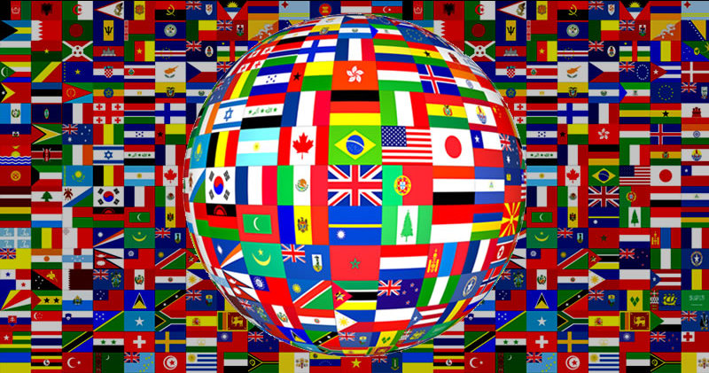
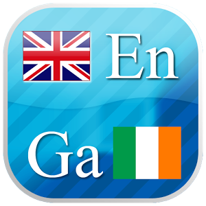
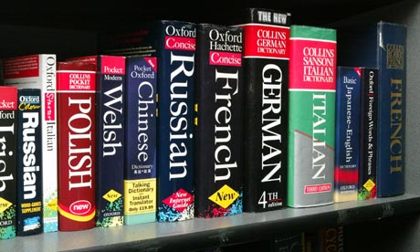
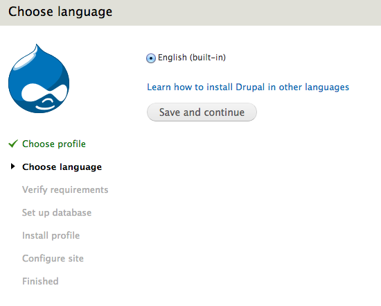
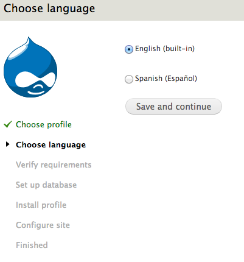
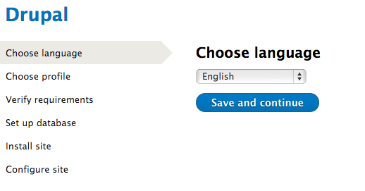
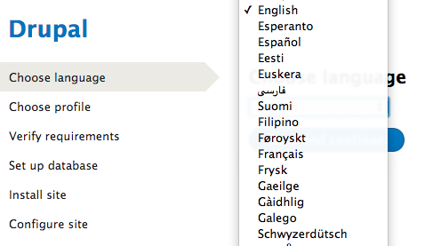
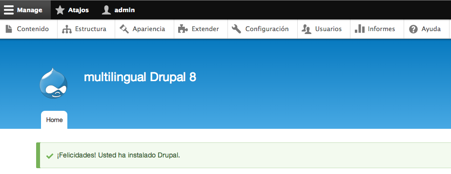
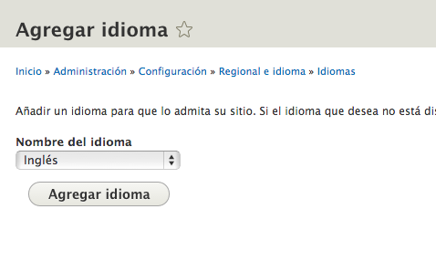

Multilingual website in Drupal 8
Drupal OpenDays Dublin 2014
By: Luis Rodriguez
Apologise for my english
Why Multilingual
Your country has two official languages
In public sector could be mandatory
Europe has lots of different languages
Increase the value for your client
In this presenmtation
Install Drupal 8 in another languageCore modules (out-of-the-box)Extend core with contributed modulesA working drupal 8 multilingual site
Drupal 7
Drupal 7
Drupal 8 - Select language
Drupal 8 - Select language
Drupal 8 - Installed
Drupal 8 - Add language
Drupal 8 - New language